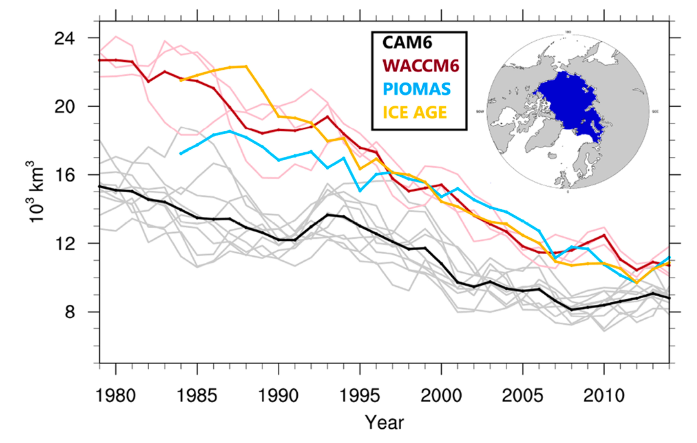
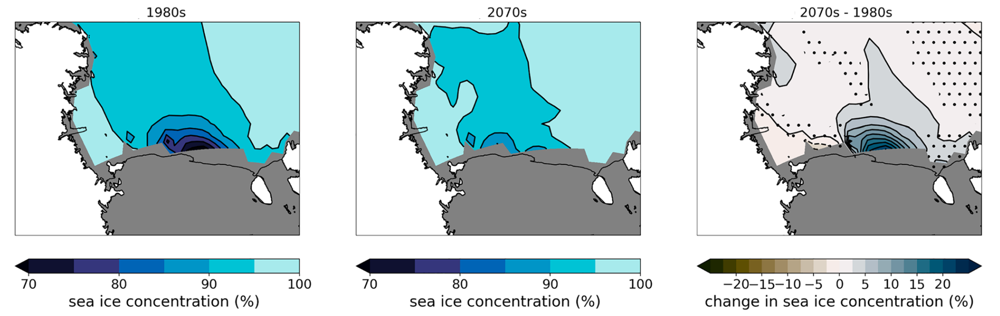
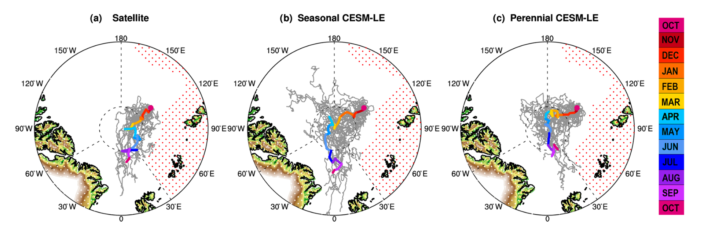
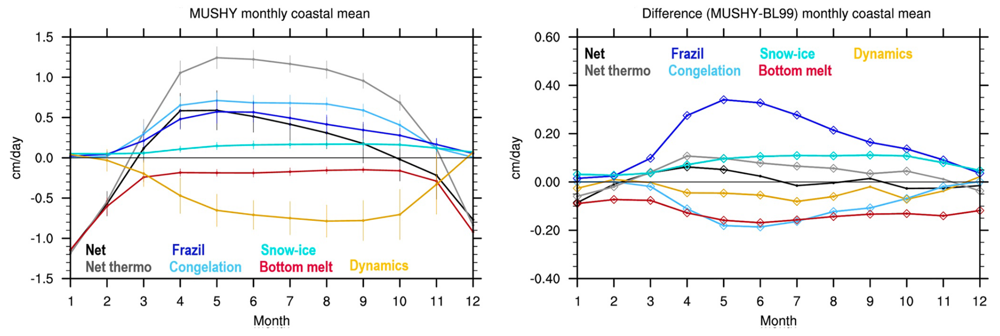
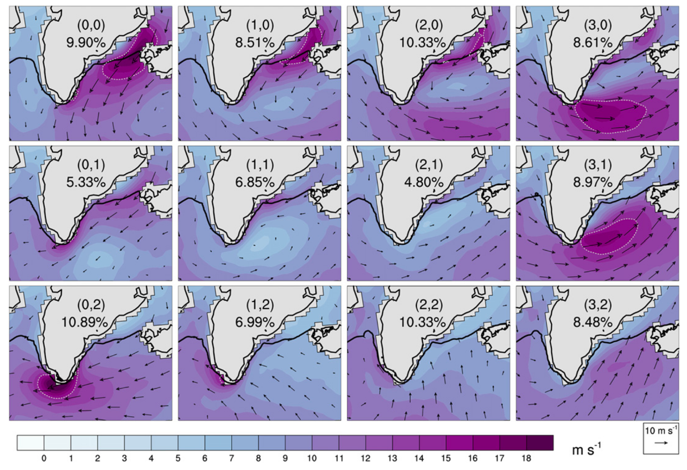
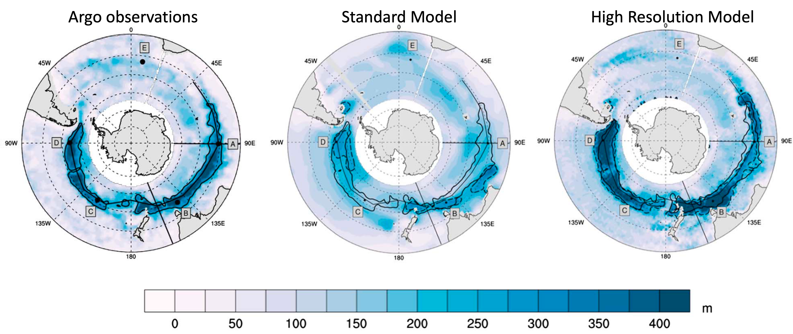

I am interested in the causes of Arctic sea ice trends and variability. Understanding how and why sea ice
has changed in the past is important for robust projections of possible future change and the impacts of the ice loss.
I examine processes driving ice loss in our model to understand pan-Arctic and regional change.

Polynyas are regions of low sea ice concentration bounded by the coast or areas of higher sea ice concentration.
Polynyas form along the Antarctic coasts as strong, katabatic winds flow down the Antarctic continent and out over the sea,
pushing the sea ice away from the coast. These regions are important for atmosphere-ocean-sea ice exchanges, and
also for the Antarctic ecosystem. I investigate polynyas in models and how they might change in the future.

I have used Lagrangian floe tracking to understand the role of internal variability and sea ice processes in the annual
cycle of sea ice behavior. Understanding how the dominant processes and behaviors change from the past to the future
can be used in conjunction with observations to give context to a single field campaign or to plan for future campaigns.
Antarctic Sea Ice Processes

Antarctic sea ice is a particularly challenging feature for models to capture. I analyze the mass budget of the sea ice
with different sea ice physical process parameterizations to understand how and why different processes drive sea ice
evolution in this region and assess differences compared with the Arctic dominant processes.

I have used Self Organizing Maps, a machine learning technique, to identify wind features around Greenland. These
hurricane force wind features can be important drives of heat and moisture fluxes between the atmosphere, ocean, and
sea ice. I am particularly interested in the connections over different time scales.

I investigate processes that drive ocean mixing in the Arctic and Antarctic using Argo float observations and Earth system
models. Strong winds drive ocean turbulence and mixing and I am interested in the heat and moisture fluxes during these
exchanges, as well as the ocean response.